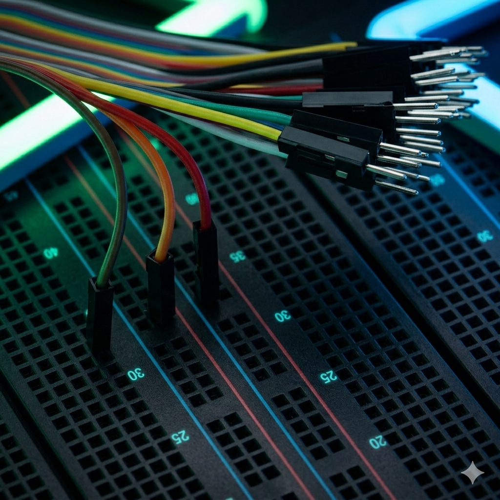

Hardware Layout
Physical Components
Hardware parts used to build the AquaSync IoT system — with direct purchase links.

ESP32 (NodeMCU)
Main microcontroller with built-in Wi-Fi & Bluetooth. The brain of the system
that connects sensors to the cloud and controls the pump.
Buy on Amazon

Soil Moisture Sensor
Measures real-time soil moisture percentage. Triggers irrigation when moisture
drops below the set threshold.
Buy on Amazon

DHT11 Sensor
Temperature and humidity sensor. Provides environmental data to optimize
irrigation decisions based on weather conditions.
Buy on Amazon

Relay Module
Acts as an electronic switch to control the water pump. Receives signals from
ESP32 to turn the pump ON or OFF.
Buy on Amazon

Water Pump (Mini)
Small submersible water pump that delivers water to the field. Controlled
automatically by the relay module based on sensor readings.
Buy on Amazon

Jumper Wires & Breadboard
Used for prototyping connections between ESP32, sensors, and relay module without
soldering during development.
Buy on Amazon